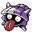

#090
Shellder
Water
Abilities: Skill Link, Shell Armor, Ice Body
Base stats BST 305
HP30
Attack65
Defense100
Speed40
Sp. Atk45
Sp. Def25
Evolution
dbbw EVOLVE_ITEM, WATER_STONE, CLOYSTERLevel-up learnset
LevelMoveType
Lv. 1Water GunWater
Lv. 1TackleNormal
Lv. 1WithdrawWater
Lv. 4Water GunWater
Lv. 7SupersonicNormal
Lv. 13ProtectNormal
Lv. 15Icicle SpearIce
Lv. 17LeerNormal
Lv. 19BubblebeamWater
Lv. 22ClampWater
Lv. 23Ice ShardIce
Lv. 25Aurora BeamIce
Lv. 27WhirlpoolWater
Lv. 33Ice BeamIce
Lv. 37Hydro PumpWater
Lv. 44Shell SmashNormal